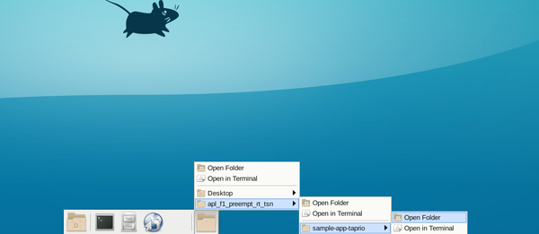
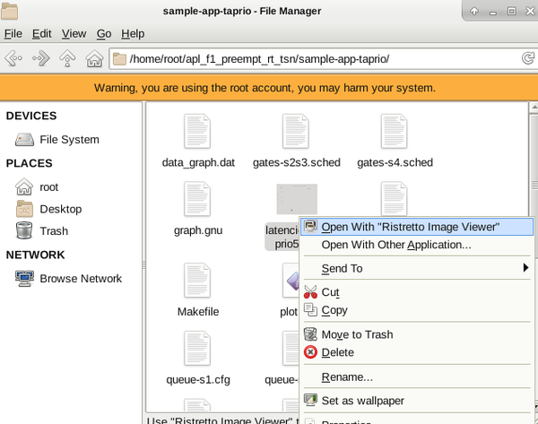
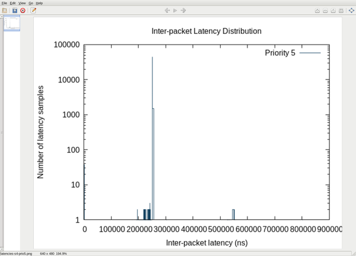

The Ristretto Image Viewer is an application that can be used to view and scroll through images. Follow these steps to view an image with Ristretto Image Viewer in XFCE.
- Click the rightmost folder icon at the bottom of the screen and navigate to the folder that contains the plotted graph image.

- Once the folder is opened, right-click on the image and select Open With "Ristretto Image Viewer" from the drop-down menu.

- View the image in Ristretto Image Viewer. Hold down the CTRL key and scroll the mouse to zoom in/out.
Sample Image Viewed in Ristretto Image Viewer
